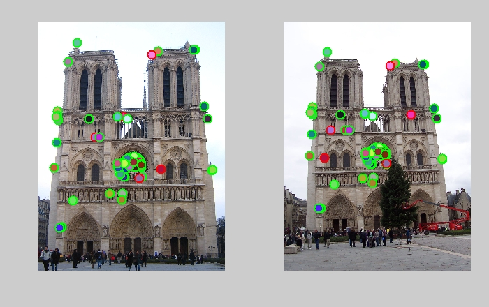
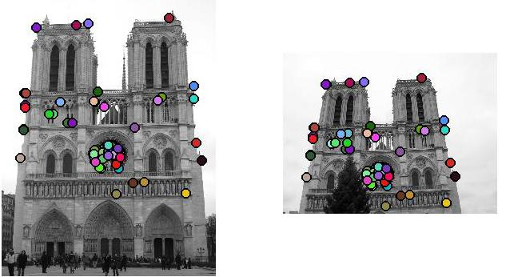
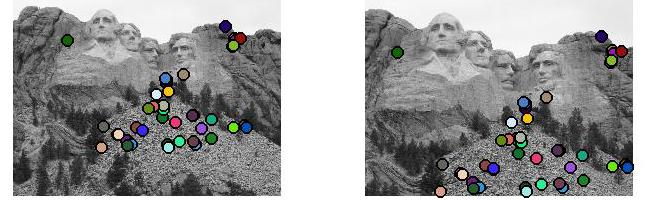
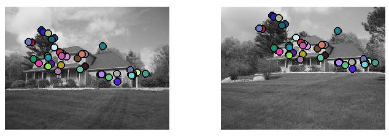
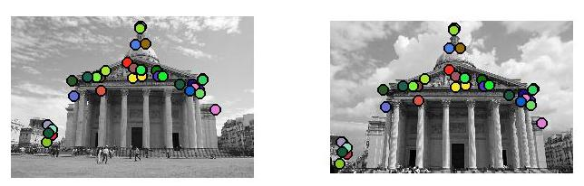
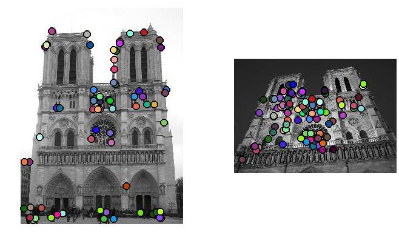
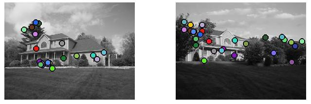

Top 100 Matches: 94Correct, 6 Incorrect
Three major steps are involved inlocal feature matching: interest point detection, feature description of a patch surrounding interest points, andfeature matching.I will discuss my implementation of each partand then showa few example image pairs.
The first step in this process is todetectpoints of interest in the image. There are multiple methods for interest point detection which each have their own advantages. This project specifically uses the Harris Corner detector.
Good interest points shouldbe able to be robustly detected.If we look at image gradients around corners, there is a significant change in all directions. This makes them much easier to localize (as opposed to a straight edge, where a detectedpoint could be reasonably be anywhere on the edge.)If we were to put asmallsliding window around a‘cornerey’ point, there should be a significant change in the values contained by the windowafter a shift in ANY direction.In order to express this, a second moment matrix must be computed from image derivatives (the x and y gradients computedusing the Sobel.)Instead of doing an explicit eigen-decomposition of thesecond moment matrix,.I computed the ratio between the determinant of the second moment matrix and the trace of the second moment matrix.I applied a threshold at 0.1 and then used a sliding window function to perform non-maximum suppression.
Now that we have a listof interest points, we need to find a wayto describetheneighborhood surrounding each point. To do this, Iused a variation of the SIFT pipeline. The general approach is to take a square patch around the detected point, and describe it in terms ofgradient values.I firstcomputed the x and y gradients for the entire image usinga Sobel filter. Using thesegradients, I computed the overall gradient for each image pixel using arctan2(dy,dx), and the magnitude of each gradient vectorsqrt(dx^2+dy^2).
Next,a 16x16 patches surrounding each interest point was divided into4x4 patches. For each 4x4 patch, I created a histogramof gradientvalues, sorting gradients of the particular neighborhood into bins by orientation. The gradient’s contribution was weighted by its magnitude. A gaussian falloff (sigma=patch size/2) was applied to each 16x16 patch splittingitinto 4x4‘s in order togive gradients closer to the detectedinterest point more weight.
The histograms for each 4x4 patch were concatenated in order to produce a 128 dimensional descriptor for each interest point. Each descriptor was normalized, clipped at 0.07, and thenre-normalized to produce better matches.I also raisedallelements of each descriptor to the power of 0.5, which produced slightly better results in the matching stage. Parameters were all tuned individually until optimal results were obtained.
Feature Matching
The final stageis the process of matching features based on their descriptors. The euclidean distance was computed between all features from the two images. Next, the first and second nearest neighbors were found for each feature inan image andthe ratio was computed between these two values. Better matches have a ratio closest to 0; this shows that there is a reasonable difference between the first nearest neighbor and second nearest neighbor and that thematched featurepair wasn’t selected on accident.Finally, the top 100 most confident matches are returned for analysis (where confidenceis equal to 1-Ratio.)
Results are very good for similar images, but I did not implement anything to deal with multiple scales. I’d love to claim thatmy program works perfectly for all image pairs, but this obviously isn’t the case.There is not much tolerance for changes in camera angle and scale,as you will see in thelast images on the page. I includedthese because I think it’s important to understand what needs improvement.Note that I show 50matches instead of 100 because itmakes it easier to see whether or not the matches are correct.I did try to usesomeimages from the internet, butmost of the images I found were pretty low resolution which impacted the results.




...Sadly, this doesn’t work for all image pairs.Here are a few examples ofmy implementation’sfailure to handleextreme changes inscale/rotation

